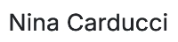

< Tous les projets
Nina Carducci
Débuggez et optimisez un site de photographe
- HTML
- CSS
- Javascript
- Lighthouse
- Wave
- Schema.org
Présentation du client :
Nina Carducci est une photographe spécialisée dans le portrait et la photographie de nature. Elle partage son travail et son portfolio en ligne via son site web, qui est essentiel pour sa visibilité auprès de nouveaux clients. Nina cherche à améliorer la performance de son site pour attirer plus de visiteurs et optimiser leur expérience.
Projet :
Nina souhaitait augmenter la visibilité de son site grâce à une optimisation SEO, corriger des problèmes de performance, et améliorer l'accessibilité du site. Un audit préliminaire avait identifié des images lourdes et des problèmes de structure de code ralentissant le site.
Objectifs
- 1. Optimiser la vitesse de chargement et l'accessibilité du site.
- 2. Optimiser la vitesse de chargement et l'accessibilité du site.
- 3. Ajouter des métas pour un affichage optimal sur les réseaux sociaux.
- 4. Produire un rapport d’intervention complet documentant les améliorations.
Fonctionnalités principales
- Optimisation des images pour réduire le temps de chargement des pages.
- Amélioration de la structure du code pour optimiser le chargement et la lisibilité.
- Intégration du schéma de données de référencement local avec Schema.org.
- Ajout de métadonnées pour un meilleur rendu des liens sur les réseaux sociaux.
- Corrections de bugs dans la navigation de la galerie et dans le système de filtres de catégorie.
Outils utilisés
HTML/CSS/JS :
Pour l'optimisation et les corrections de bugs
Lighthouse :
Pour l'audit des performances

Wave :
Pour l’audit d’accessibilité
Schema.org : Pour l'ajout de données de référencement local